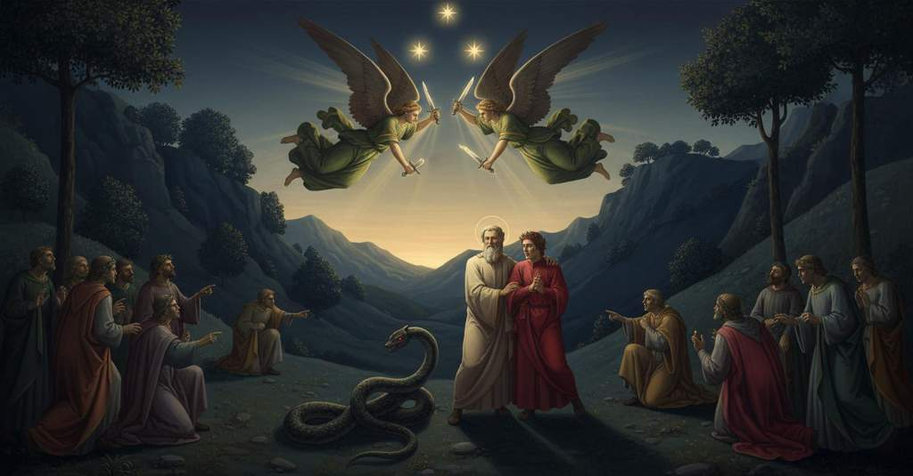

Purgatorio — Canto 8

1
Era già l’ora che volge il disio
It was now the hour that turns the desire
すでに船乗りたちに望郷の念を向けさせ、
2
ai navicanti e ’ntenerisce il core
of seafarers and softens the heart
心を和らげる時、
3
lo dì c’han detto ai dolci amici addio;
the day they have said to sweet friends goodbye;
それは甘美な友に別れを告げた日のことであり、
4
e che lo novo peregrin d’amore
and that pierces the new pilgrim with love
そして新たな巡礼者を愛の想いが
5
punge, se ode squilla di lontano
if he hears a bell from afar
突き刺す時、もし遠くに鐘の音を聞けば、
6
che paia il giorno pianger che si more;
that seems to mourn the day that is dying;
それは死にゆく日を嘆いているかのように思える。
7
quand’ io incominciai a render vano
when I began to make my hearing vain
その時、私は聞くことをやめ、
8
l’udire e a mirare una de l’alme
and to gaze upon one of the souls
立ち上がった魂の一人を見つめ始めた、
9
surta, che l’ascoltar chiedea con mano.
risen, who with her hand was asking for listening.
その者は手で静聴を求めていた。
10
Ella giunse e levò ambo le palme,
She joined and raised both her palms,
彼女は両の手のひらを合わせ、掲げ、
11
ficcando li occhi verso l’orïente,
fixing her eyes toward the east,
東の方へと目を据えた、
12
come dicesse a Dio: ‘D’altro non calme’.
as if saying to God: ‘For nothing else do I care’.
まるで神に「他に望むものはありません」と言うかのように。
13
‘Te lucis ante’ sì devotamente
‘Te lucis ante’ so devoutly
「テ・ルチス・アンテ」が、かくも敬虔に
14
le uscìo di bocca e con sì dolci note,
issued from her mouth and with such sweet notes,
彼女の口から、かくも甘美な音色で発せられ、
15
che fece me a me uscir di mente;
that it made me go out of my mind;
私は我を忘れてしまった。
16
e l’altre poi dolcemente e devote
and the others then sweetly and devoutly
そして他の者たちも、甘美に、敬虔に、
17
seguitar lei per tutto l’inno intero,
followed her through the entire hymn,
彼女に従って聖歌のすべてを歌い、
18
avendo li occhi a le superne rote.
having their eyes on the supernal wheels.
天上の天球へと目を向けていた。
19
Aguzza qui, lettor, ben li occhi al vero,
Sharpen here, reader, your eyes well to the truth,
ここで読者よ、真理に対しよく目を凝らすがよい、
20
ché ’l velo è ora ben tanto sottile,
for the veil is now indeed so thin,
なぜならヴェールは今やまことに薄く、
21
certo che ’l trapassar dentro è leggero.
that certainly to pass inside it is easy.
その内側へ通り抜けるのは、たしかに容易いのだから。
22
Io vidi quello essercito gentile
I saw that noble host
私はその高貴な軍勢が、
23
tacito poscia riguardare in sùe,
silently afterward look upward,
その後、静かに天を見上げるのを見た、
24
quasi aspettando, palido e umìle;
as if waiting, pale and humble;
まるで何かを待ち、青ざめ、うやうやしく。
25
e vidi uscir de l’alto e scender giùe
and I saw issue from on high and descend
そして私は、高みから現れ、下りてくるのを
26
due angeli con due spade affocate,
two angels with two fiery swords,
見た、二人の天使が、二本の燃える剣を手に、
27
tronche e private de le punte sue.
truncated and deprived of their points.
その剣は折れて、切っ先を欠いていた。
28
Verdi come fogliette pur mo nate
Green as little leaves just now born
生まれたばかりの若葉のように緑の
29
erano in veste, che da verdi penne
were they in their robes, which from green wings
衣をまとっていた、その衣は緑の翼に
30
percosse traean dietro e ventilate.
struck, they drew behind and fanned.
打たれ、風にはためき、後ろに引かれていた。
31
L’un poco sovra noi a star si venne,
The one came to stand a little above us,
一人は我々の少し上方に留まり、
32
e l’altro scese in l’opposita sponda,
and the other descended on the opposite bank,
もう一人は反対の岸に下り立った、
33
sì che la gente in mezzo si contenne.
so that the people were contained in the middle.
そのため、人々はその間に留まった。
34
Ben discernëa in lor la testa bionda;
I could well discern in them the blond head;
彼らの金色の頭はよく見分けられた。
35
ma ne la faccia l’occhio si smarria,
but in the face the eye was lost,
しかしその顔には、目は惑わされ、
36
come virtù ch’a troppo si confonda.
like a faculty that is confused by too much.
あまりの輝きに圧倒される力のように。
37
«Ambo vegnon del grembo di Maria»,
«Both come from the bosom of Maria»,
「二人ともマリアの懐から来たのだ」
38
disse Sordello, «a guardia de la valle,
said Sordello, «to guard the valley,
とソルデッロは言った、「谷を守るために、
39
per lo serpente che verrà vie via».
for the serpent that will come presently».
やがて来るであろう蛇に対して」。
40
Ond’ io, che non sapeva per qual calle,
Wherefore I, who did not know by which path,
そのため私は、どの道から来るか知らず、
41
mi volsi intorno, e stretto m’accostai,
turned myself around, and drew close,
あたりを見回し、そしてぴったりと身を寄せた、
42
tutto gelato, a le fidate spalle.
all frozen, to the faithful shoulders.
全身凍りつきながら、信頼する両肩に。
43
E Sordello anco: «Or avvalliamo omai
And Sordello again: “Now let us go down
そしてソルデッロもまた言った。「さあ、もう下りていきましょう
44
tra le grandi ombre, e parleremo ad esse;
among the great shades, and we will speak to them;
かの偉大な魂たちの中へ、そして彼らに話しましょう。
45
grazïoso fia lor vedervi assai».
it will be most gracious for them to see you.”
あなた方を見ることは彼らにとって大いなる喜びでしょう」。
46
Solo tre passi credo ch’i’ scendesse,
Only three steps I think I descended,
わずか三歩ほど、私が下りたと思うと、
47
e fui di sotto, e vidi un che mirava
and I was below, and saw one who was gazing
私は下にいて、一人の魂がじっと見つめているのを見た
48
pur me, come conoscer mi volesse.
only at me, as if he wished to know me.
まさに私を、私を見知りたいとでもいうように。
49
Temp’ era già che l’aere s’annerava,
It was already the time that the air was darkening,
時はすでに大気が黒ずむ頃であったが、
50
ma non sì che tra li occhi suoi e ’ miei
but not so much that between his eyes and mine
しかし彼の目と私の目の間で
51
non dichiarisse ciò che pria serrava.
it did not make clear what it first concealed.
以前は閉ざされていたものを明らかにせぬほどではなかった。
52
Ver’ me si fece, e io ver’ lui mi fei:
Toward me he came, and I toward him came:
彼は私の方へ進み、私も彼の方へ進んだ。
53
giudice Nin gentil, quanto mi piacque
noble Judge Nino, how it pleased me
高潔なるニーノ判官よ、どれほど嬉しかったことか
54
quando ti vidi non esser tra ’ rei!
when I saw you were not among the damned!
あなたが罪人たちの中にいないのを見た時は！
55
Nullo bel salutar tra noi si tacque;
No lovely greeting between us was left unspoken;
私たちの間ではいかなる丁重な挨拶も欠かされなかった。
56
poi dimandò: «Quant’ è che tu venisti
then he asked: “How long is it since you came
それから彼は尋ねた。「あなたが来てからどれくらい経ちますか
57
a piè del monte per le lontane acque?».
to the foot of the mountain by the distant waters?”.
遠い水路を越えて、この山の麓へ？」。
58
«Oh!», diss’ io lui, «per entro i luoghi tristi
“Oh!” I said to him, “through the sorrowful places
「おお！」と私は彼に言った。「悲しき場所を抜けて
59
venni stamane, e sono in prima vita,
I came this morning, and I am in my first life,
私は今朝来たのです、そして私は最初の生命にあり、
60
ancor che l’altra, sì andando, acquisti».
although the other, by so going, I am acquiring.”
このよう進むことで、もう一方の（生命）を得ようとしていますが」。
61
E come fu la mia risposta udita,
And when my answer was heard,
そして私の答えが聞かれるや、
62
Sordello ed elli in dietro si raccolse
Sordello and he drew back
ソルデッロと彼は後ろへ身を引いた
63
come gente di sùbito smarrita.
like people suddenly bewildered.
まるで突然当惑した人々のように。
64
L’uno a Virgilio e l’altro a un si volse
One turned to Virgil and the other to one
一人はウェルギリウスに、もう一人はある者の方を向いた
65
che sedea lì, gridando: «Sù, Currado!
who was sitting there, crying: “Up, Currado!
そこに座っていた者に、叫びながら。「立て、コッラードよ！
66
vieni a veder che Dio per grazia volse».
come see what God through grace has willed.”
来て見るがよい、神が恩寵によってお望みになったことを」。
67
Poi, vòlto a me: «Per quel singular grado
Then, turned to me: “By that singular grace
そして私に向き直り言った。「あなたが負うその類なき恩寵に免じて、
68
che tu dei a colui che sì nasconde
that you owe to him who so conceals
それは、かくも深く隠しておられるあの方から来るもの
69
lo suo primo perché, che non lì è guado,
his first ‘why,’ for which there is no ford,
その第一の理由には、いかなる浅瀬もないのだが、
70
quando sarai di là da le larghe onde,
when you are beyond the wide waves,
あなたがかの広き波の向こう側に行かれた時には、
71
dì a Giovanna mia che per me chiami
tell my Giovanna to call for me
私のジョヴァンナに、私のために呼びかけるよう伝えてください
72
là dove a li ’nnocenti si risponde.
there where the innocent are answered.
罪なき者たちに応えが与えられる場所で。
73
Non credo che la sua madre più m’ami,
I do not think her mother loves me anymore,
彼女の母がもはや私を愛しているとは思わない、
74
poscia che trasmutò le bianche bende,
since she changed the white veils,
彼女がかの白い喪服を替えてしまってからは。
75
le quai convien che, misera!, ancor brami.
which it is fitting that, wretched one!, she still longs for.
それを、哀れなことに！、彼女は今なお望むに違いない。
76
Per lei assai di lieve si comprende
Through her it is very easily understood
彼女によって、いとも容易に理解される
77
quanto in femmina foco d’amor dura,
how long in a woman the fire of love lasts,
女のうちに愛の炎がどれほど続くか、
78
se l’occhio o ’l tatto spesso non l’accende.
if sight or touch does not often rekindle it.
もし目や触れることが頻繁にそれを燃え立たせなければ。
79
Non le farà sì bella sepultura
Not so fine a sepulcher will be made for her
彼女にあれほど美しい墓を造りはしないだろう
80
la vipera che Melanesi accampa,
by the viper that the Milanese encamp
ミラノ人が掲げるかの毒蛇は、
81
com’ avria fatto il gallo di Gallura».
as the rooster of Gallura would have done.”
ガッルーラの雄鶏がしたであろうようには」。
82
Così dicea, segnato de la stampa,
Thus he spoke, marked with the stamp,
かく彼は言った、その印を刻まれて、
83
nel suo aspetto, di quel dritto zelo
in his expression, of that righteous zeal
その表情に、かの正しき熱意の、
84
che misuratamente in core avvampa.
that blazes with measure in the heart.
心の中で節度をもって燃え上がる。
85
Li occhi miei ghiotti andavan pur al cielo,
My greedy eyes were still going to the sky,
我が貪欲な目はひたすら天を、
86
pur là dove le stelle son più tarde,
just there where the stars are slowest,
星々の動きがより遅い所を、
87
sì come rota più presso a lo stelo.
like a wheel closest to the axle.
車軸により近い車輪のように見つめていた。
88
E ’l duca mio: «Figliuol, che là sù guarde?».
And my duke: “Son, what do you watch up there?”
すると我が導き手は言った。「息子よ、何をそこに見ているのか？」。
89
E io a lui: «A quelle tre facelle
And I to him: “At those three torches
私は彼に答えた。「あの三つの松明にです
90
di che ’l polo di qua tutto quanto arde».
with which the pole on this side is all ablaze.”
それによってこちらの極はすっかり燃え上がっています」。
91
Ond’ elli a me: «Le quattro chiare stelle
Wherefore he to me: “The four bright stars
すると彼は私に言った。「今朝お前が見た四つの輝く星は
92
che vedevi staman, son di là basse,
that you saw this morning, are low over there,
向こうに低く沈み、
93
e queste son salite ov’ eran quelle».
and these have risen where those were.”
そしてこれらがあの星々のあった場所に昇ったのだ」。
94
Com’ ei parlava, e Sordello a sé il trasse
As he was speaking, Sordello drew him to himself
彼がそう語っていると、ソルデッロが彼を自分の方へ引き寄せ
95
dicendo: «Vedi là ’l nostro avversaro»;
saying: “See there our adversary”;
こう言った。「あちらを見よ、我らが敵が」。
96
e drizzò il dito perché ’n là guardasse.
and pointed his finger so that he might look there.
そして、そちらを見るようにと指を差した。
97
Da quella parte onde non ha riparo
From that side where it has no protection,
その、何の防御もない方から
98
la picciola vallea, era una biscia,
the little valley, was a serpent,
小さな谷に、一匹の蛇がいた、
99
forse qual diede ad Eva il cibo amaro.
perhaps such as gave to Eve the bitter food.
おそらくはエヴァに苦い食物を与えたものであろう。
100
Tra l’erba e ’ fior venìa la mala striscia,
Between the grass and the flowers came the evil streak,
草と花の間に、その邪悪な筋はやって来て、
101
volgendo ad ora ad or la testa, e ’l dosso
turning its head from time to time, and its back
時折頭を巡らし、背を
102
leccando come bestia che si liscia.
licking like a beast that preens itself.
自らを滑らかにする獣のように嘗めていた。
103
Io non vidi, e però dicer non posso,
I did not see, and therefore cannot say,
私は見なかったので、語ることはできない、
104
come mosser li astor celestïali;
how the celestial goshawks moved;
天の鷹たちがどのように動いたかを。
105
ma vidi bene e l’uno e l’altro mosso.
but I saw well both the one and the other moved.
だが、一方と他方が動いたのははっきりと見た。
106
Sentendo fender l’aere a le verdi ali,
Hearing the air cleaved by the green wings,
緑の翼で大気を切り裂くのを感じると、
107
fuggì ’l serpente, e li angeli dier volta,
the serpent fled, and the angels turned back,
蛇は逃げ去り、天使たちは向きを変え、
108
suso a le poste rivolando iguali.
flying upward equally to their posts.
等しく己が持ち場へと飛び戻った。
109
L’ombra che s’era al giudice raccolta
The shade that had drawn close to the judge
判事が呼びかけた時に
110
quando chiamò, per tutto quello assalto
when he called, throughout that whole assault
彼に寄り添っていたその魂は、その襲撃の間じゅう
111
punto non fu da me guardare sciolta.
was not for a moment loosed from my gaze.
私の視線から少しも解き放たれなかった。
112
«Se la lucerna che ti mena in alto
«So may the lamp that leads you on high
「君を高みへと導くその灯火が
113
truovi nel tuo arbitrio tanta cera
find in your free will as much wax
君の自由意志のうちに、それだけの蝋を見出さんことを
114
quant’ è mestiere infino al sommo smalto»,
as is needed to reach the highest enamel»,
最上の瑠璃の天に至るまで必要なだけの」
115
cominciò ella, «se novella vera
it began, «if you know true news
と、彼は語り始めた。「ヴァル・ディ・マーグラ、あるいはその近隣の地の
116
di Val di Magra o di parte vicina
of Val di Magra or a neighboring part,
真の知らせを知っているなら、私に教えてほしい。
117
sai, dillo a me, che già grande là era.
tell it to me, for I was once great there.
かつて私はその地で偉大であったのだから。
118
Fui chiamato Currado Malaspina;
I was called Currado Malaspina;
私はコッラード・マラスピーナと呼ばれた。
119
non son l’antico, ma di lui discesi;
I am not the elder, but from him I descended;
古の方ではなく、その子孫である。
120
a’ miei portai l’amor che qui raffina».
for my kin I bore the love that here is refined».
我が者らへの愛を抱いたが、それはここで浄められる」。
121
«Oh!», diss’ io lui, «per li vostri paesi
«Oh!», I said to him, «Through your lands
「おお！」と私は彼に言った。「あなたの国々を
122
già mai non fui; ma dove si dimora
I have never been; but where can one dwell
私は一度も訪れたことはありません。しかし、ヨーロッパのどこに住んでいようと
123
per tutta Europa ch’ei non sien palesi?
in all of Europe where they are not renowned?
それらが知られていない場所がありましょうか。
124
La fama che la vostra casa onora,
The fame that honors your house,
あなたの家を称える名声は、
125
grida i segnori e grida la contrada,
proclaims its lords and proclaims its land,
その領主を、その地を、声高に告げるので、
126
sì che ne sa chi non vi fu ancora;
so that he knows of it who has not yet been there;
まだそこを訪れぬ者も知っているほどです。
127
e io vi giuro, s’io di sopra vada,
and I swear to you, so may I go above,
そして私は誓います、私が高みへと行けますように、
128
che vostra gente onrata non si sfregia
that your honored family does not strip itself
あなたの誉れ高き一族は、いまだその飾りを失っていないと
129
del pregio de la borsa e de la spada.
of the glory of the purse and of the sword.
財嚢と剣の徳という飾りを。
130
Uso e natura sì la privilegia,
Custom and nature so privilege it,
慣習と天性が、かくもその一族を特遇し、
131
che, perché il capo reo il mondo torca,
that, though the guilty head twists the world,
悪しき頭が世を歪めようとも、
132
sola va dritta e ’l mal cammin dispregia».
it alone goes straight and scorns the evil path».
ただ独りまっすぐに進み、邪な道を蔑むのです」。
133
Ed elli: «Or va; che ’l sol non si ricorca
And he: «Now go; for the sun will not lie down again
すると彼は言った。「さあ、行きなさい。太陽が再び休むことはないだろう
134
sette volte nel letto che ’l Montone
seven times in the bed that the Ram
七度、牡羊座の寝床に
135
con tutti e quattro i piè cuopre e inforca,
with all four feet covers and bestrides,
その四つ足すべてで覆い、またがるその寝床に、
136
che cotesta cortese oppinïone
before this courteous opinion of yours
その時までには、その丁重な意見は
137
ti fia chiavata in mezzo de la testa
shall be nailed into the middle of your head
君の頭の真ん中に打ち込まれているだろう
138
con maggior chiovi che d’altrui sermone,
with stronger nails than another’s speech,
他人の言葉よりも、さらに強い釘で、
139
se corso di giudicio non s’arresta».
if the course of judgment is not halted».
もし審判の流れが止まらなければ」。